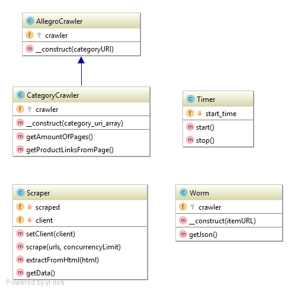

Libraries

Application makes use of 4 custom classes, which, in CodeIgniter framework terminology, are called libraries.
Allegro Crawler
Class AllegroCrawler
Parent Crawler class which is used to scrap data from Allegro.
class AllegroCrawler{
/**
* Object of type Symfony\Domcrawler\Crawler which hosts current crawler
* @var \Symfony\Component\DomCrawler\Crawler
*/
protected $crawler;
/**
* AllegroCrawler constructor.
* @param $categoryURI - uri to be scrapped by crawler
*/
public function __construct($categoryURI)
{
//Create new DOMDocument object which contains html not like string but like object
$dom = new DOMDocument('1.0');
//Load content from provided link to this object
@$dom->loadHTMLFile($categoryURI);
//Create crawler on this object and mark base url as allegro main url
$this->crawler = new \Symfony\Component\DomCrawler\Crawler($dom, 'https://allegro.pl/');
}
}
Category Crawler
Class CategoryCrawler
Crawler which is used to scrap CATEGORY pages at allegro (class Worm is used to scrap product pages).
class CategoryCrawler extends AllegroCrawler
{
/**
* This crawler object
* @var
*/
protected $crawler;
/**
* CategoryCrawler constructor.
* @param array $category_uri_array - category link from which crawler has to scrap content, has to be an array due to framework limitations
*/
public function __construct(array $category_uri_array)
{
//get first (and only) item of an array
$url = $category_uri_array[0];
//Invoke parent constructor and create crawler on this link
parent::__construct($url);
}
/**
* Function which returns amount of pages from current category
* @return mixed
*/
function getAmountOfPages()
{
//Get value from html element identified by [class="m-pagination__text"] which hosts value of max pages
$numberOfPages = $this->crawler->filter('[class="m-pagination__text"]')->text();
return $numberOfPages;
}
/**
* Function that collects links to products from current category page
* @return mixed - array of links
*/
function getProductLinksFromPage()
{
//Extract Big div with items from page
$div = $this->crawler->filter('[data-box-name="items container"]');
//Extract Headers from big div which contain links to items
$h2 = $div->filter('[class="_4462670 "],[class="_4462670 _7b0067f "]');
//Extract Links from inside headers
$anchors = $h2->filter('a');
//Extract final uri's from links and push them to $linksArray
$linksArray = $anchors->each(function (\Symfony\Component\DomCrawler\Crawler $node, $i) {
$url=getCleanUrl($node->link()->getUri());
return $url;
});
return $linksArray;
}
}
Worm
Class Worm
Crawler which is used to scrap PRODUCT pages at allegro (class CategoryCrawler is used to scrap category pages)
class Worm
{
/**
* This crawler object
* @var \Symfony\Component\DomCrawler\Crawler
*/
protected $crawler;
/**
* Worm constructor.
* Creates worm that scraps data from given itemURL
* @param $itemURL
*/
public function __construct($itemURL)
{
$this->crawler= new \Symfony\Component\DomCrawler\Crawler($itemURL,'https://allegro.pl/');
}
/**
* Function that extracts data from allegro javascript and packs it to array
* @return mixed - associative array with data
*/
public function getJson(){
//Extract <script> tag from allegro
$text = $this->crawler->filter('[data-box-name="summary"]')->filter('script')->html();
//Cut out json string from <script> tag, trim and process it so it will look like valid json
$start = '"primarySlot":';
$end = '"additionalServices"';
$jsonstring = get_string_between($text,$start,$end);
$stripped = str_replace($jsonstring, "{},",$text);
//Further trim, process and decode html special character used for polish characters
$json = html_entity_decode(rtrim(strstr($stripped,"{\""),";"));
return json_decode($json,true);
}
}
Scraper
Class Scraper
Class which creates 'virtual' browsers which open pages and scrap data from them.
class Scraper
{
/**
* Object of current browser client
* @var
*/
private $client;
/**
* Array of scrapped data
* @var array
*/
private $scraped = [];
/**
* Setter which allows to set current client
* @param Browser $client
*/
public function setClient(Browser $client){
$this->client = $client;
}
/**
* Main scrape function which scraps provided url's in a multi-threading manner using a queue
* @param array $urls - array of urls to be scrapped
* @param $concurrencyLimit - queue limit
*/
public function scrape(array $urls = [], $concurrencyLimit)
{
//Create new queue with provided concurency limit
$queue = new Clue\React\Mq\Queue($concurrencyLimit, null, function ($url) {
//When client is in queue extract content from url
return $this->client->get($url);
});
$this->scraped = [];
foreach ($urls as $url) {
//Populate queue with links
$queue($url)->then(
//When queue processes link invoke next function
function (\Psr\Http\Message\ResponseInterface $response) {
//Extract data from html and write result to scrapped array
$this->scraped[] = $this->extractFromHtml((string) $response->getBody());
});
}
}
/**
* Function which is used to extract data from html document
* @param $html - html document
* @return mixed - array with data
*/
public function extractFromHtml($html)
{
//Create new Worm and send it to html document
$crawler = new Worm($html);
$item = $crawler->getJson();
return $item;
}
/**
* Getter to return scrapped data
* @return array - scraped data
*/
public function getData()
{
return $this->scraped;
}
}
Timer
Class Timer
Class which helps to measure time between processes.
class Timer
{
/**
* Starting time
* @var
*/
private $start_time;
/**
* Function which is used to start timer
*/
public function start(){
$this->start_time=microtime(1);
}
/**
* Function which is used to stop timer
* @return string - time
*/
public function stop(){
$end_time=microtime(1);
return getTime($this->start_time,$end_time);
}
}